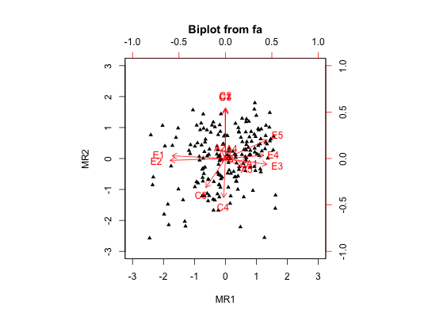

Extends the biplot function to the output of fa, fa.poly or principal. Will plot factor scores and factor loadings in the same graph. If the number of factors > 2, then all pairs of factors are plotted. Factor score histograms are plotted on the diagonal. The input is the resulting object from fa, principal, or }code{linkfa.poly with the scores=TRUE option. Points may be colored according to other criteria.
# S3 method for psych biplot(x, labels=NULL,cex=c(.75,1),main="Biplot from fa", hist.col="cyan",xlim.s=c(-3,3),ylim.s=c(-3,3),xlim.f=c(-1,1),ylim.f=c(-1,1), maxpoints=100,adjust=1.2,col,pos, arrow.len = 0.1,pch=16,choose=NULL, cuts=1,cutl=.0,group=NULL,...)
| x | The output from |
|---|---|
| labels | if NULL, draw the points with the plot character (pch) specified. To identify the data points, specify labels= 1:n where n is the number of observations, or labels =rownames(data) where data was the data set analyzed by the factor analysis. |
| cex | A vector of plot sizes of the data labels and of the factor labels |
| main | A main title for a two factor biplot |
| hist.col | If plotting more than two factors, the color of the histogram of the factor scores |
| xlim.s | x limits of the scores. Defaults to plus/minus three sigma |
| ylim.s | y limits of the scores.Defaults to plus/minus three sigma |
| xlim.f | x limits of the factor loadings.Defaults to plus/minus 1.0 |
| ylim.f | y limits of the factor loadings.Defaults to plus/minus 1.0 |
| maxpoints | When plotting 3 (or more) dimensions, at what size should we switch from plotting "o" to plotting "." |
| adjust | an adjustment factor in the histogram |
| col | a vector of colors for the data points and for the factor loading labels |
| pos | If plotting labels, what position should they be in? 1=below, 2=left, 3 top, 4 right. If missing, then the assumption is that labels should be printed instead of data points. |
| arrow.len | the length of the arrow head |
| pch | The plotting character to use. pch=16 gives reasonable size dots. pch="." gives tiny points. If adding colors, use pch between 21 and 25. (see examples). |
| choose | Plot just the specified factors |
| cuts | Do not label cases with abs(factor scores) < cuts) (Actually, the distance of the x and y scores from 0) |
| cutl | Do not label variables with communalities in the two space < cutl |
| group | A vector of a grouping variable for the scores. Show a different color and symbol for each group. |
| … | more options for graphics |
Uses the generic biplot function to take the output of a factor analysis fa, fa.poly or principal components analysis principal and plot the factor/component scores along with the factor/component loadings.
This is an extension of the generic biplot function to allow more control over plotting points in a two space and also to plot three or more factors (two at time).
This will work for objects produced by fa, fa.poly or principal if they applied to the original data matrix. If however, one has a correlation matrix based upon the output from tetrachoric or polychoric, and has done either fa or principal on the correlations, then obviously, we can not do a biplot. However, both of those functions produce a weights matrix, which, in combination with the original data can be used to find the scores by using factor.scores. Since biplot.psych is looking for two elements of the x object: x$loadings and x$scores, you can create the appropriate object to plot. See the third example.
fa, fa.poly, principal, fa.plot, pairs.panels
#the standard example data(USArrests) fa2 <- fa(USArrests,2,scores=TRUE) biplot(fa2,labels=rownames(USArrests))#just plot factors 1 and 3 from that solution biplot(fa3,choose=c(1,3))# fa2 <- fa(bfi[16:25],2) #factor analysis fa2$scores <- fa2$scores[1:100,] #just take the first 100 #now plot with different colors and shapes for males and females biplot(fa2,pch=c(24,21)[bfi[1:100,"gender"]],group =bfi[1:100,"gender"], main="Biplot of Conscientiousness and Neuroticism by gender")r <- cor(bfi[1:200,1:10], use="pairwise") #find the correlations f2 <- fa(r,2) x <- list() x$scores <- factor.scores(bfi[1:200,1:10],f2) x$loadings <- f2$loadings class(x) <- c('psych','fa') biplot(x,main="biplot from correlation matrix and factor scores")